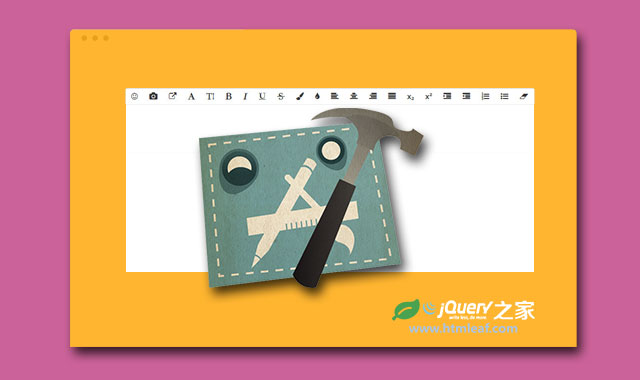
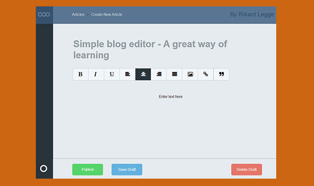

基于Bootstrap响应式所见即所得的jQuery编辑器插件
A Light Weight HTML5 Text Editor designed as a JQuery Plugin
jQuery之家
返回下载页
LineControl Demo
<div style="text-align: justify;"><span style="font-weight: bold; font-style: italic; background-color: rgb(255, 255, 255); color: rgb(255, 0, 0);">如果经常关注周鸿祎的微博和朋友圈，那么对花椒直播这款产品一定不会陌生。</span></div><div style="text-align: justify;"><span style="font-style: italic; background-color: rgb(255, 255, 255); color: rgb(255, 0, 0);"> 去年6月4日，花椒直播正式上线，对外资料显示“是一个集齐超高颜值美女帅哥、热门网红、校花校草，有花边新闻、明星发布会、生活趣闻等内容的手机直播社交平台”，同时强调拒绝色情和低俗。这款产品脱胎于国外的流媒体直播应用Periscope。凯特王妃生产、希拉里竞选等，特别是一些突发性事件，Periscope的媒体传播能力都表现突出，甚至超过Twitter或instagram。</span></div><div style="text-align: justify;"><span style="font-style: italic; background-color: rgb(255, 255, 255); color: rgb(255, 0, 0);"><br></span></div><div style="text-align: justify;"><span style="font-weight: bold; font-style: italic; background-color: rgb(255, 255, 255); color: rgb(255, 0, 0);">“我们就是要做一款国内的Periscope。”花椒联合创始人田艳表示。</span></div><div style="text-align: justify;"><span style="font-style: italic; background-color: rgb(255, 255, 255); color: rgb(255, 0, 0);"> 但如果是仅仅作为一款视频直播产品，才半岁的花椒其实并没有吸引太多外界关注。其中很多关注还是依靠周鸿祎个人。花椒上线第二天，周鸿祎在微博上转发了第一条花椒直播内容。他称，“有意思，我准备每天花五分钟在花椒上分享创业经验产品心得，你会来看吗？”半年里，他已发布了50多条和花椒相关的微博，40多条朋友圈，还花样频出。7月16日，对手小米举行新品发布会，周鸿祎在花椒围观，在雷军讲解净水器产品时，他表示“我觉得雷总好辛苦，还得学习滤芯”。8月25日，360奇酷手机发布前夜，周鸿祎的宝马730突然自燃了，他竟然用花椒现场直播了起来。期间，王思聪还上线问了一句，“老周，这么晚怎么还出漏子？”不可否认，周鸿祎是一个营销高手，而这背后是他对新业务的尝试。目前，360的主要业务集中在安全领域、搜索引擎、应用商店、物联网（智能硬件）、手机及移动操作系统，同时也在尝试一些例如影视等新业务。“花椒是基于微博、微信之外的第三种用视频方式来进行人和人沟通的社交平台。”从田艳对花椒定位的表述中，能看出周鸿祎想要一款具有社交属性的产品。而这种渴望，即便是在花椒遇到多次经营困难的时候，他依然不想更改。</span></div><div style="text-align: justify;"><span style="font-style: italic; background-color: rgb(255, 255, 255); color: rgb(255, 0, 0);"><br></span></div><div style="text-align: justify;"><span style="font-weight: bold; font-style: italic; background-color: rgb(255, 255, 255); color: rgb(255, 0, 0);">还是周鸿祎一人说了算</span></div><div style="text-align: justify;"><span style="font-style: italic; background-color: rgb(255, 255, 255); color: rgb(255, 0, 0);"> 在过去一年里，外界一直默认花椒就是360的。但田艳依然时时避讳，只承认360有投资。</span></div><div style="text-align: justify;"><span style="font-style: italic; background-color: rgb(255, 255, 255); color: rgb(255, 0, 0);">翻开花椒的工商登记信息，花椒直播的注册公司为北京密境和风科技有限公司，法人股东是北京信步天下科技有限公司（变更前是自然人股东王东攀，花椒Web端的产品经理），自然人股东是360安全卫士等的产品经理欧胜。高管名单中也皆是360一众高管的名字，董事长为360投资部门负责人刘威，董事为360副总裁刘峻、欧胜。“360方面持股80%，剩下20%是期权池，”知情人称，“可以理解花椒是360的人出来成立的一个子公司。”在360起家的过程中，周鸿祎手下培养了一批有实力的产品经理，他们现在成了360“开疆辟土”的排头兵。去年二三月，花椒开始立项，合伙人包括金山元老朱传靖，前趣游董事长玉红，360产品经理欧胜、向明等六七个360自己的或是和360颇有渊源的合伙人。</span></div><div style="text-align: justify;"><span style="font-style: italic; background-color: rgb(255, 255, 255); color: rgb(255, 0, 0);"><br></span></div><div style="text-align: justify;"><span style="font-style: italic; background-color: rgb(255, 255, 255); color: rgb(255, 0, 0);"> 其中，朱传靖负责技术，向明管产品。5月，在传统媒体呆了十多年的田艳加入花椒团队负责运营。<span style="line-height: 1.42857143;">对花椒来说，田艳反而是一个空降兵。对外，她的职位是花椒直播的联合创始人或者运营负责人，对内，并没有人能为这个产品下最终决定权，除了周鸿祎。在360内部，做产品的架构是周鸿祎一个人面对无数个产品经理。他每周会跟花椒高管开会讨论产品，正如他在微博给自己的简介：360公司首席用户体验官。“刚开始做，有点急功近利。”据花椒内部的人介绍，”初期我们把很多其他产品的代码拼在一起，各个代码有时候还有冲突，更新受到影响，CDN什么也不太支持，用的是别人的云。技术要同时承担花椒、小水滴、新闻频道运作，影响视频质量，还卡顿。”后来还因为没有视频牌照被举报。“几个月前，大概是被竞品举报了不止一次，去执法大队交了3000块罚款，罚过一次后，基本半年内都属于整改期，不会再重复罚款了。”</span></span></div><div style="text-align: justify;"><span style="font-style: italic; background-color: rgb(255, 255, 255); color: rgb(255, 0, 0);">花了四个月的时间，花椒就上线了，产品显得有些仓促，周鸿祎也一直很不满意。</span></div><div style="text-align: justify;"><span style="font-style: italic; background-color: rgb(255, 255, 255); color: rgb(255, 0, 0);"><br></span></div><div style="text-align: justify;"><span style="font-style: italic; background-color: rgb(255, 255, 255); color: rgb(255, 0, 0);"> “老周每次开会都会挑出一些产品的毛病。”内部人士李明称，“然后再讨论为什么会出现这些问题，找到为问题负责的人直接骂。”没过多久，玉红和欧胜离开了，剩下向明、田艳、朱传靖，以及后来加入的前趣游高级副总裁温跃宇。在那之后，花椒内部尽量避免接受媒体采访，不是不愿意曝光，而是因为数据一直在变，产品方向也一直在变。“没人能说出来花椒到底要做什么，可能老周自己都没想好。”李明表示。这符合周鸿祎一贯的风格，先做产品，边做边从体验找突破点，搅乱一个已有的市场，获取用户，再考虑之后的模式。“我就觉得这个产品很有意思。”周鸿祎到去年11月才首次承认自己在做花椒这个产品。他说，“为什么我要做手表、我要做行车记录仪，这些东西大家也看不懂，看不清，包括我最近在做一个花椒直播。”做新闻还是做秀场？花椒的产品定位在去年下半年发生了三次转变。上线初期，花椒效仿Periscope，当时运营团队有8到10人，娱乐是重点项目。据田艳介绍，“这些人员在传统媒体做过，拥有至少200人以上的深度联系人，包括记者、自媒体。他们给花椒提供了600到700名重要的种子用户资源，其他内容则是让用户自己播。”</span></div>
如果你喜欢这个插件，那么你可能也喜欢:

所见即所得的jQuery富文本编辑器插件-wysiwyg.js

简单的jQuery富文本编辑器插件